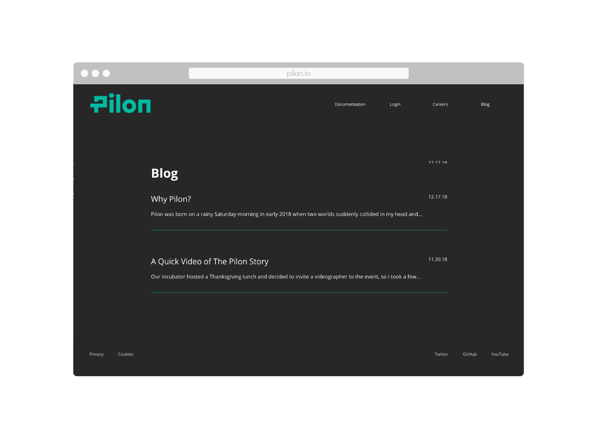
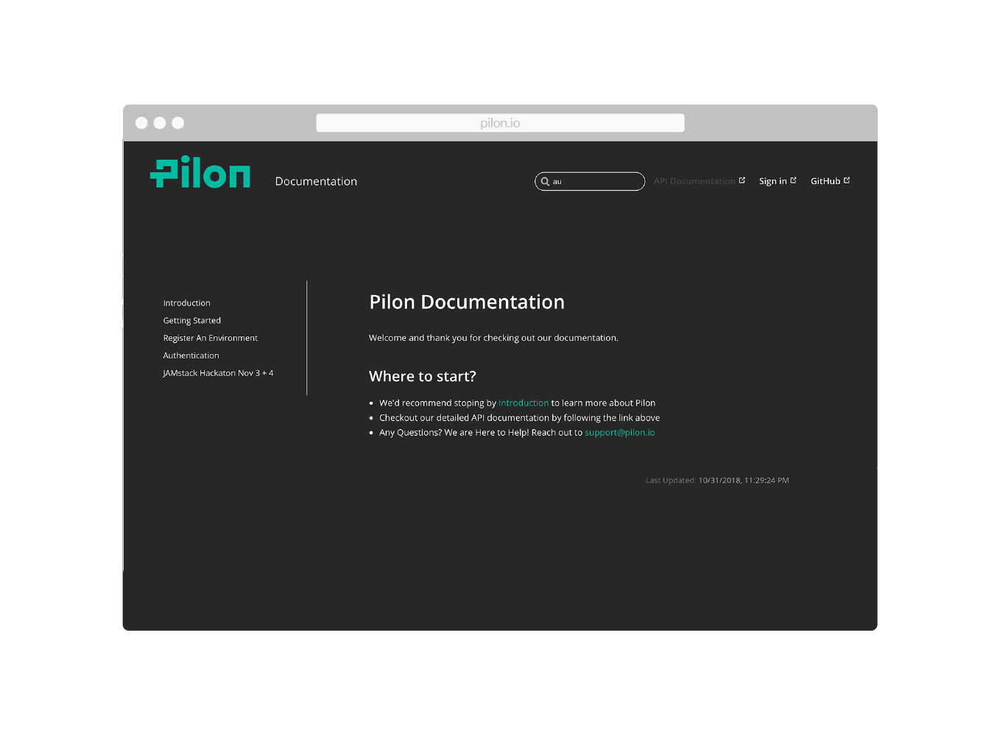
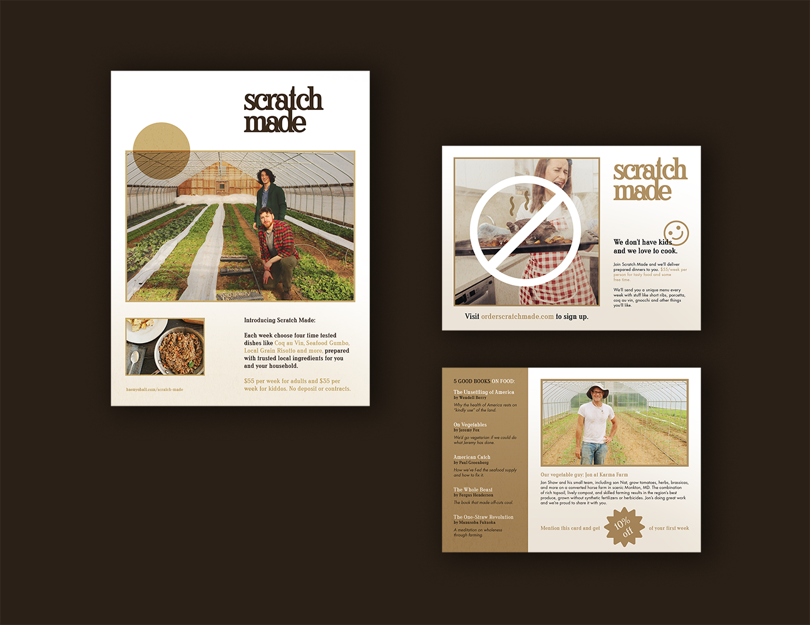
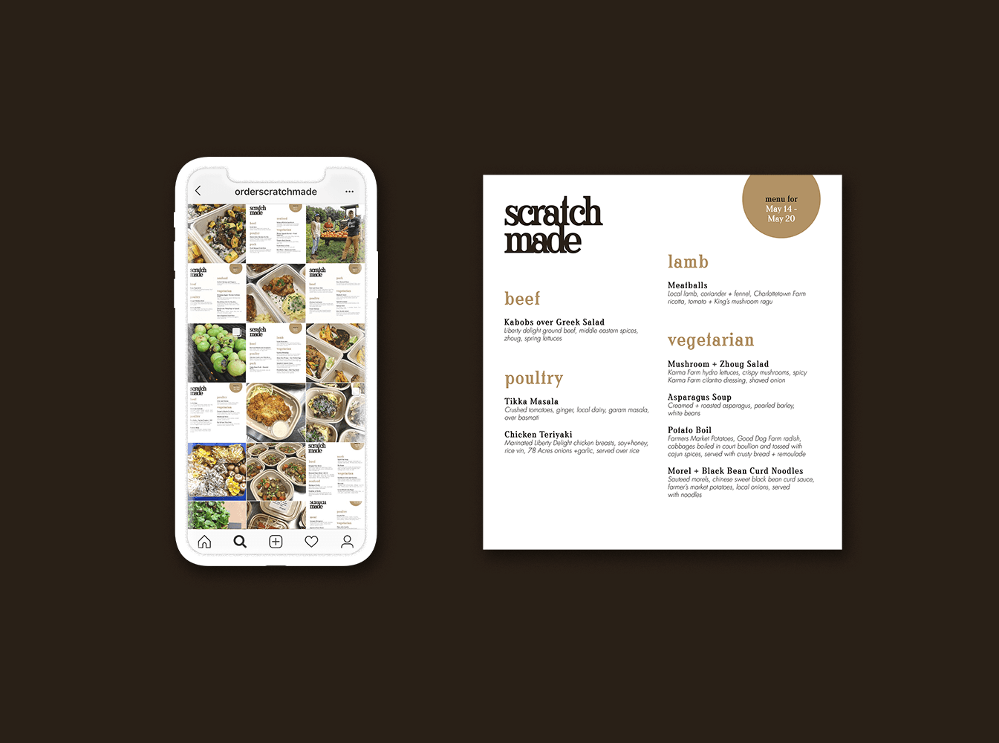
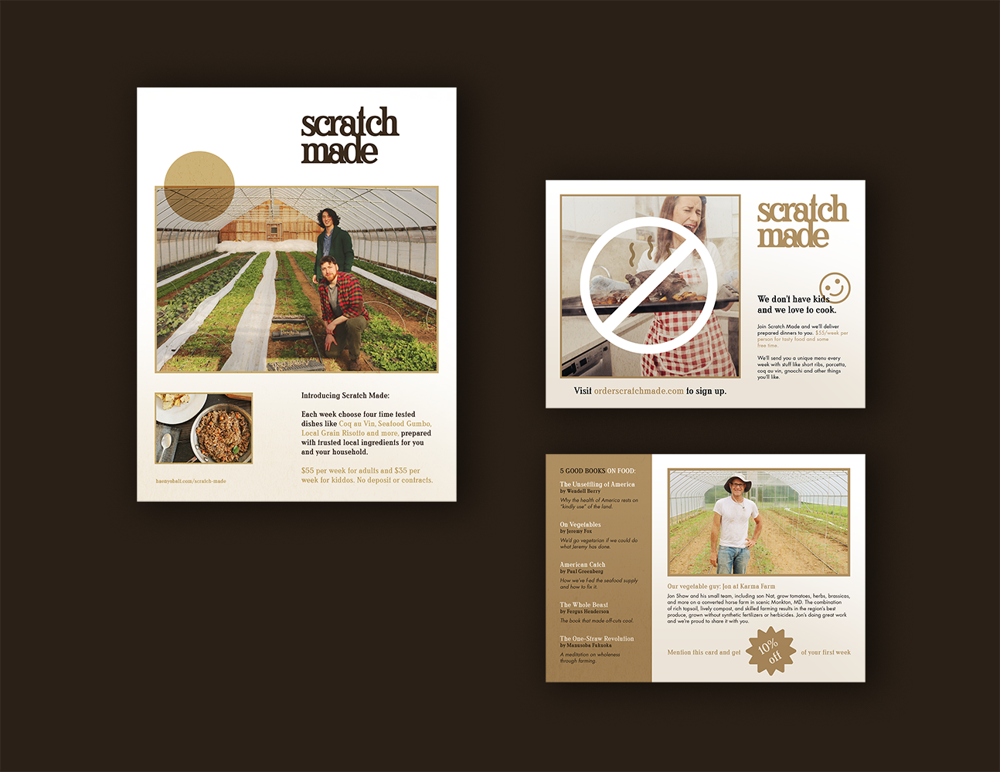
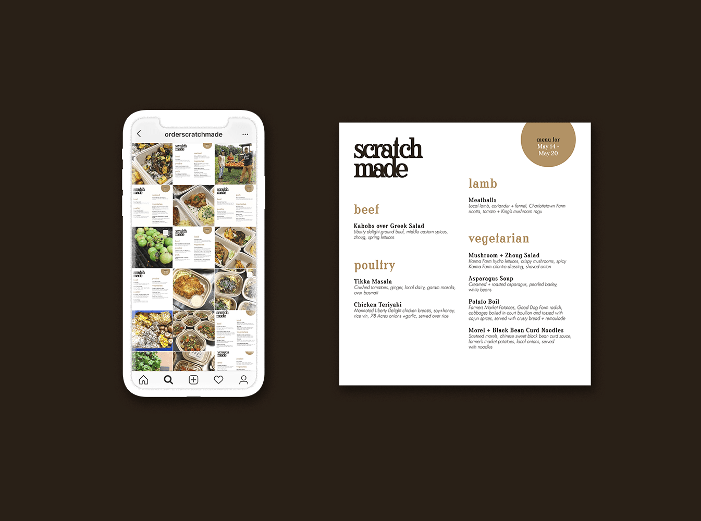
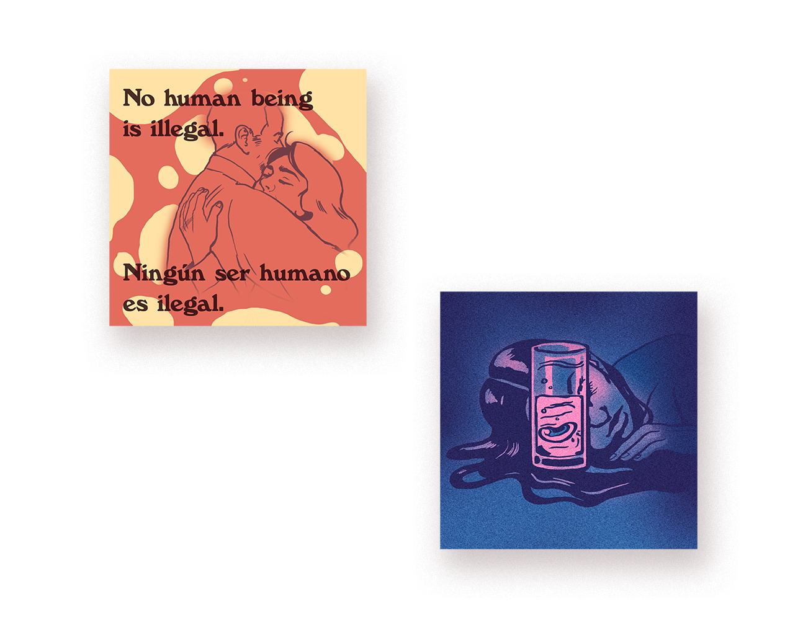
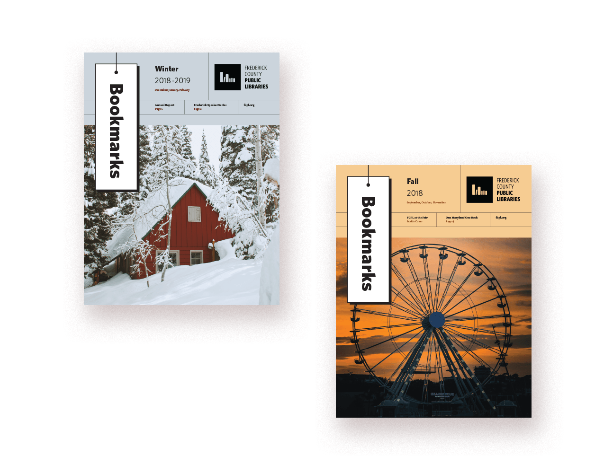
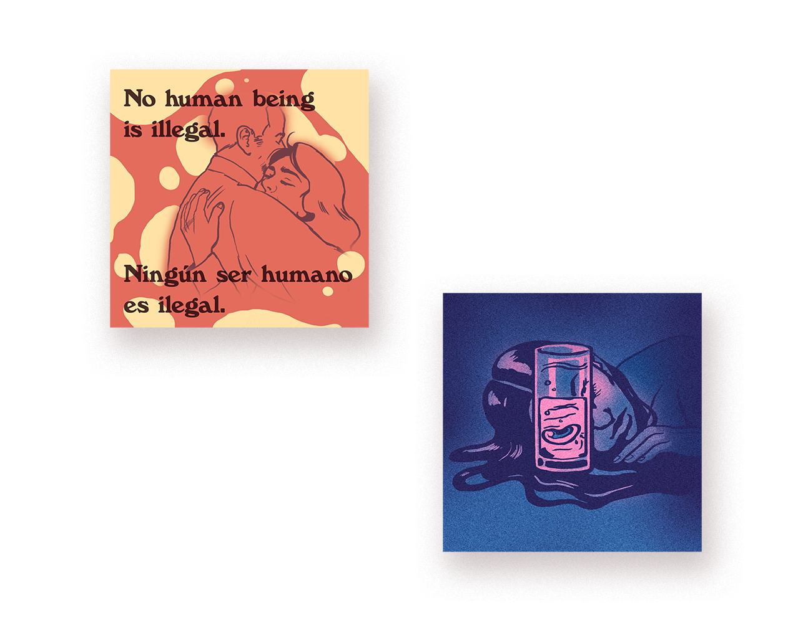
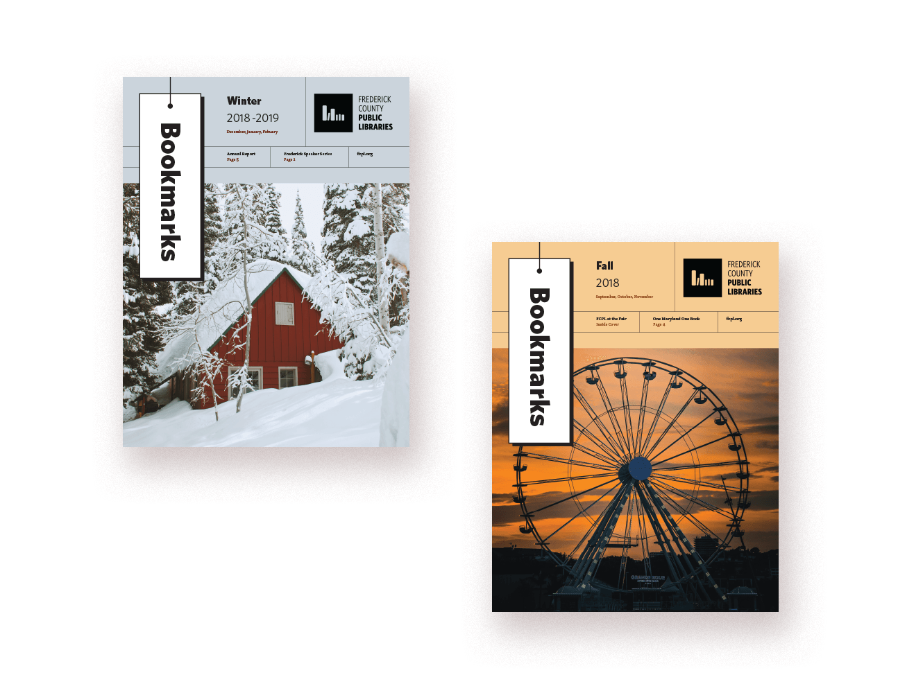

API-First E-Commerce.
As a headless API-first e-commerce product, it was important that Pilon’s microsite appealed to advanced developers in the field. With this in mind, the design needed to be based around interactive visual elements, like the animated gradient background, to emphasize lightweight technology that’s easy to use. Take a look at pilon.io
 





 


